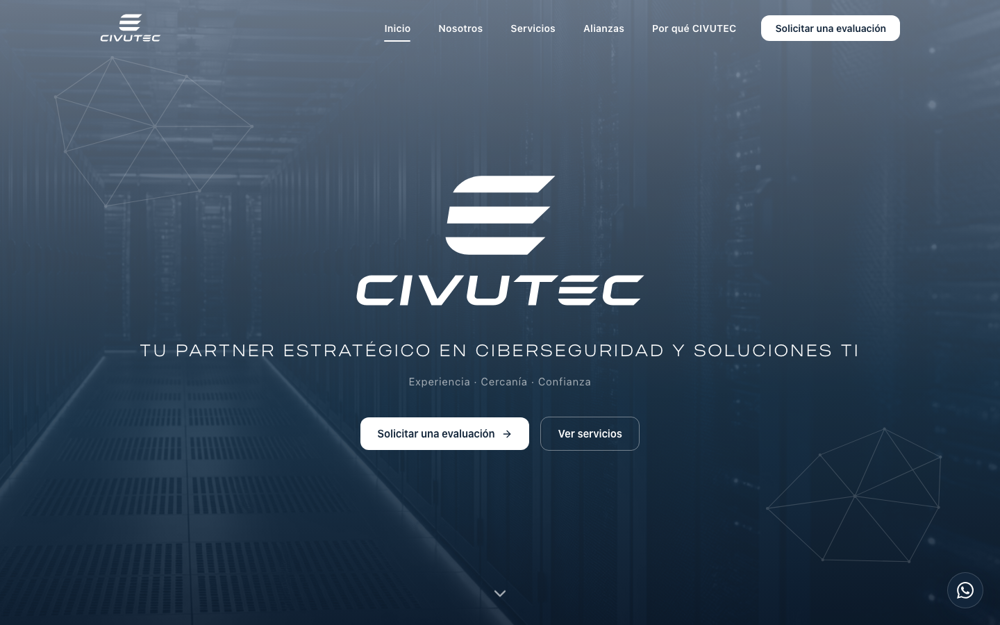
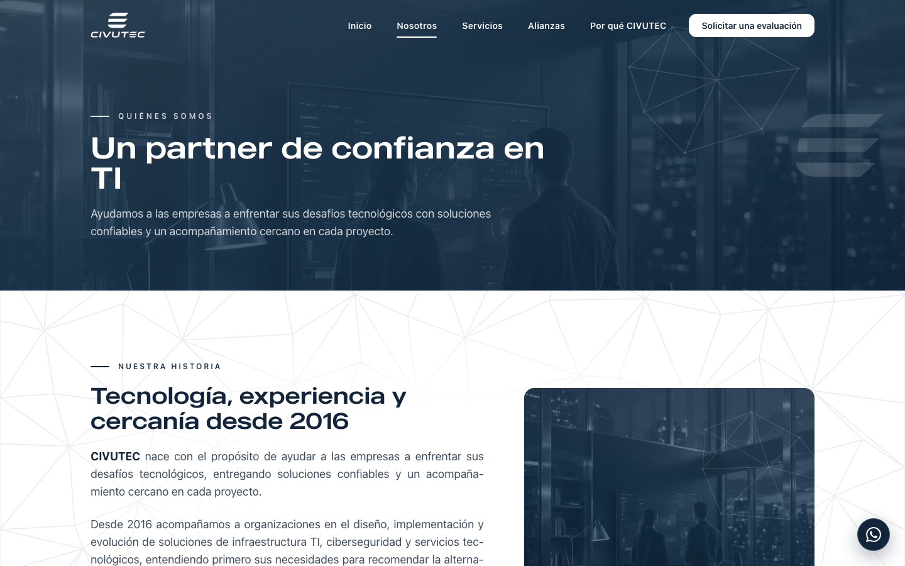
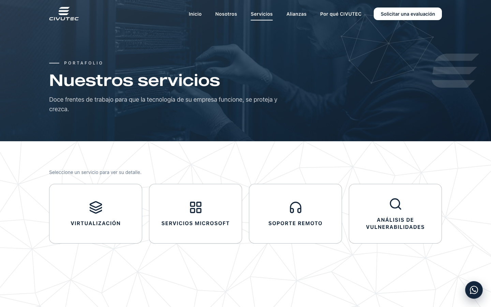
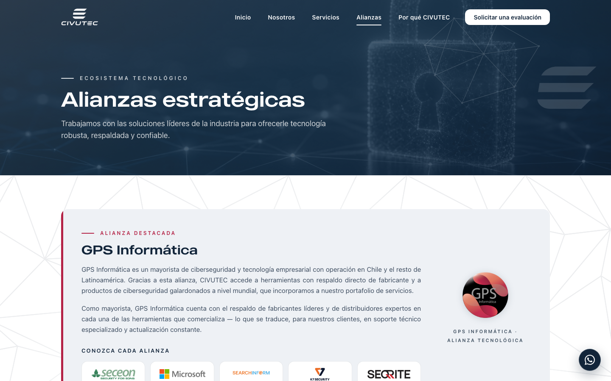
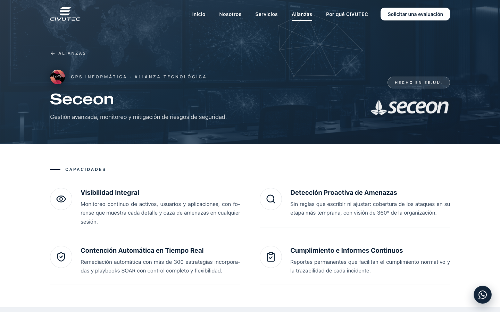
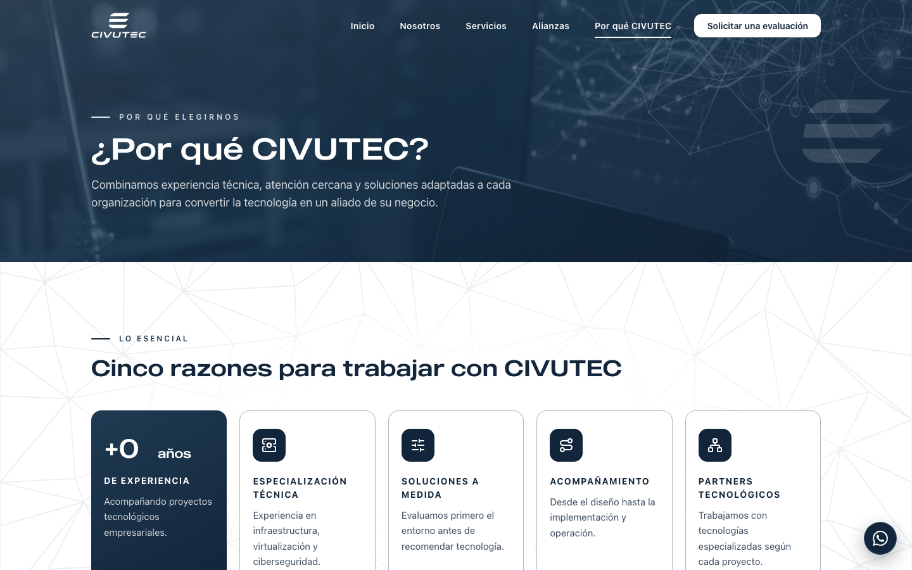

Lo que existe hoy gracias al proyecto
Antes de entrar en el detalle, esto es lo que CIVUTEC tiene ya construido, publicado y probado.
Inicio, Nosotros, Servicios, Alianzas, Por qué CIVUTEC y Contacto, más una página propia para cuando alguien escribe mal una dirección.
Seceon, Microsoft, SearchInform, K7 y Seqrite, cada una con sus productos y su ficha para descargar.
Material comercial en PDF con la identidad de CIVUTEC y de cada fabricante, listo para que un prospecto se lo lleve.
Agrupados en tres frentes, cada uno con su explicación desplegable y su dirección propia para compartir.
La sección de normativa chilena: protección de datos y marco de ciberseguridad, con lo que CIVUTEC puede hacer por cada una.
El sitio se recorrió completo en tres tamaños de pantalla antes de publicar y otra vez ya publicado. Todas correctas.
Y lo que no se ve pero también está hecho: la identidad del brochure aprobado aplicada a todo el sitio, una revisión de seguridad sin hallazgos críticos, el peso de cada página bajo control para que cargue rápido, y comportamiento cuidado en celular, que es donde más se va a ver.
Las versiones del sitio
Cada versión se construyó sobre la anterior. Lo que está aquí está aplicado y visible en el enlace de revisión.
- Sitio de cinco páginas —Inicio, Nosotros, Servicios, Alianzas y Contacto— con navegación fija y pie.
- Portada a pantalla completa, bloque "Quiénes somos", servicios destacados y presentación de alianzas.
- Nosotros con historia, misión, visión, filosofía, compromiso y los seis valores en una fila que se arrastra.
- Los doce servicios del brochure, agrupados en tres frentes, con tarjetas que se despliegan.
- Alianzas con GPS destacada y las cinco marcas del portafolio, más la fila de plataformas.
- Contacto con formulario, correo, teléfono y el globo de WhatsApp presente en todas las páginas.
- Identidad del brochure en todo: azul marino, tipografía MADE Outer Sans, malla poligonal, fotografía en duotono.
- La malla de fondo dejó de competir con el texto: trazo más definido y fuera del interior de los recuadros.
- Íconos de servicios limpios, logos de marca sobre recuadro blanco sin veladuras, valores con mejor contorno y texto más legible.
- Se quitó el marco que atravesaba varios elementos en la portada.
- Cada marca tiene su propia página. Desde Alianzas se entra a Seceon, Microsoft, SearchInform, K7 o Seqrite y se ve su portada, sus productos uno a uno y su cierre. Antes todo vivía apretado en una sola página.
- Fichas descargables. Cada marca tiene el botón de descarga de su ficha co-brandeada en PDF. Las cinco quedaron incorporadas al sitio y la descarga, que antes fallaba, funciona.
- Logos integrados a la fotografía, sin la placa blanca que los separaba de la imagen.
- Rótulo de la alianza GPS rediseñado, con versiones para fondo claro y oscuro.
- Plataformas con logo real —VMware, Microsoft, HP, Veeam, QNAP— e incorporación de Ubiquiti.
- Banda de clientes en Inicio, con marcadores por sector a la espera de la lista que CIVUTEC autorice.
- Página propia de error. Si alguien escribe mal una dirección, ve una página del sitio que le explica qué pasó y lo devuelve al inicio.
- Botones homologados, transición más suave entre páginas y textos justificados donde correspondía.
Textos
- Lema del sitio: "Tu partner estratégico en ciberseguridad y soluciones TI", en portada, pie, título de la ventana y descripción para buscadores.
- Trío de valores: "Experiencia · Cercanía · Confianza" en todo el sitio.
- Historia con el titular "Tecnología, experiencia y cercanía desde 2016" y sus tres párrafos; el Inicio toma el primero para que las dos páginas cuenten lo mismo.
- Misión, visión, filosofía y compromiso con los textos nuevos.
- Los seis valores renovados: Confianza, Excelencia, Cercanía, Agilidad, Compromiso y Evolución, cada uno con su texto e ícono.
- "Beneficios" pasa a "Por qué elegirnos", con los ocho puntos numerados.
- Contacto con la cabecera nueva y sin la frase incongruente; canales renombrados y la promesa de soporte ajustada a "Opciones de soporte 7×24 según servicio contratado".
- Pie corregido: "© 2026 Civutec SpA — Chile. Todos los derechos reservados."
Estructura
- Página nueva "Por qué CIVUTEC". Entra al menú en el lugar de Contacto. Arriba, las cinco razones con la cifra "+10 años" animada; abajo, los ocho beneficios numerados. Contacto sigue accesible desde el botón azul, el pie y el cierre de cada página.
- Sección de normativa chilena en el Inicio. Ley 21.719 de protección de datos personales y Ley 21.663 Marco de Ciberseguridad, cada una con enlace al texto oficial, y "Cómo ayuda CIVUTEC" en cuatro frentes: protección, monitoreo, visibilidad y respuesta. Se llega desde el pie y desde el frente 02 de Servicios.
- Botón principal "Solicitar una evaluación" en los siete llamados a la acción principales. Todos llevan a Contacto.
La normativa es una sección del Inicio y no una página aparte: la ve todo el que entra, sin depender de un clic en el menú.
La sección no cita montos de multas: las sanciones dependen del caso y de los agravantes; una cifra suelta envejece mal y expone a CIVUTEC a una discusión que no le corresponde. Cada ley enlaza a su fuente oficial.
Los ocho beneficios se mudaron a "Por qué CIVUTEC" en vez de duplicarse: cinco razones como resumen, ocho beneficios como desarrollo, en una sola página que sostiene el argumento completo.
- Revisión de seguridad del sitio completo: sin hallazgos críticos ni altos. Al servidor público solo va la versión compilada, nunca el código fuente ni documentos internos.
- Peso bajo control. El sitio se mantuvo dentro del tope acordado, y el logo de la alianza pasó de 167 a 74 kB: 93 kB menos en cada página que se abre.
- 118 comprobaciones antes de publicar, recorriendo el sitio en escritorio, tablet y celular: navegación por teclado, movimiento reducido, menú móvil y página de error.
- 67 comprobaciones ya publicado, contra el sitio real: las seis rutas por acceso directo y por recarga, los textos nuevos, los datos que leen los buscadores, la descarga de una ficha y la página de error.
- Verificación archivo por archivo de que lo publicado es exactamente lo que se probó.
Cómo funciona el sitio
Seis rutas y una página de error. La barra superior se mantiene fija, se vuelve translúcida al bajar, y el botón azul de la derecha —"Solicitar una evaluación"— lleva siempre a Contacto. El globo de WhatsApp acompaña en todas las páginas.
1 · Inicio

Qué mostrar en la reunión: la sección de normativa. Es el contenido nuevo más visible y el que más conversación abre.
2 · Nosotros

Qué mostrar: arrastrar la fila de valores. Es la pieza que mejor demuestra el nivel de terminación del sitio.
3 · Servicios

Qué mostrar: abrir una tarjeta y seguir el enlace del frente 02 hacia la normativa. Es la costura entre lo comercial y lo regulatorio.
4 · Alianzas y páginas de marca


Qué mostrar: entrar a Seceon y descargar la ficha. Demuestra que el material comercial ya está conectado al sitio.
5 · Por qué CIVUTEC

Qué mostrar: es la página que responde "¿por qué ustedes?" sin que el visitante tenga que armar el argumento leyendo todo el sitio.
6 · Contacto
Cabecera con el texto nuevo, formulario, canales directos —correo y teléfono— y la caja azul con "Experiencia · Cercanía · Confianza".
En celular
Todo el sitio se probó en tamaño de teléfono y tablet. El menú se recoge en un botón, la fila de valores se arrastra con el dedo, las tarjetas de servicios se despliegan al tocarlas y el globo de WhatsApp queda al alcance del pulgar.
Notas para quien lo enseñe por primera vez
- Se puede entrar directo a cualquier dirección y recargar sin que se rompa: está probado ruta por ruta.
- El sitio respeta la preferencia de movimiento reducido del sistema: si está activada, las animaciones no se ejecutan y el contenido se ve completo.
- Es un sitio de revisión: pide a los buscadores que lo ignoren, así nadie llega por Google a una versión en curso. Eso se quita al publicar en civutec.cl.
- Los seis nombres de "Confían en nosotros" son marcadores por sector, no clientes reales. Esperan la lista que CIVUTEC autorice.
Qué se hizo en materia de seguridad
El sitio pasó por dos revisiones de seguridad completas: una antes de publicarse por primera vez y otra antes de la última versión. Ninguna encontró hallazgos críticos ni altos. Esto es lo que se revisó y lo que se dejó protegido.
Al servidor público solo va la versión compilada del sitio. El código fuente, los documentos internos y el material de trabajo nunca salen del equipo de la agencia. Se comprobó archivo por archivo, en cada publicación, que lo servido es exactamente lo probado.
El sitio no guarda datos de nadie. No tiene base de datos ni registro de usuarios. El formulario de contacto está apagado hasta que exista una cuenta a nombre de CIVUTEC: mientras tanto no se envía nada a ningún tercero y la página muestra los canales directos.
Las librerías con las que está construido se auditaron contra la base de vulnerabilidades conocidas, y están en versiones vigentes. Es lo que evita que una pieza ajena con un fallo publicado se cuele en el sitio de CIVUTEC.
Todo enlace a un sitio externo —los textos oficiales de las leyes, las marcas, WhatsApp— abre en pestaña nueva y sin pasarle al destino información sobre desde dónde viene el visitante.
Mientras es un sitio en revisión, los buscadores lo ignoran. Nadie llega por Google a una versión en curso. Esa marca se retira al publicar en civutec.cl.
Se aplicó la metodología de revisión de seguridad de GPS Informática adaptada a un sitio sin servidor propio, con referencia a los estándares OWASP y NIST. Cada revisión queda documentada con su veredicto, y ninguna publicación sale sin ese visto bueno.
Lo que falta para publicar en civutec.cl
Nada de esto impide seguir revisando el sitio en el enlace actual.
| Punto | Qué falta | De quién depende |
|---|---|---|
| Dominio civutec.cl | Publicar el sitio en el dominio propio. CIVUTEC facilita el acceso al panel del dominio o a su proveedor; la agencia hace la configuración y la publicación. | CIVUTEC y la agencia |
| Formulario de contacto | Conectarlo al servicio de envío con una cuenta a nombre de CIVUTEC, para que los mensajes lleguen a contacto@civutec.cl. | CIVUTEC y la agencia |
| Fotografías | Confirmar por escrito el plan de licencia que cubre las fotos de banco usadas. | La agencia |
| Visibilidad en buscadores | Retirar la marca de "no indexar" al publicar, para que el sitio pueda posicionar. | La agencia |
| Lista de clientes | Reemplazar los marcadores por sector por los clientes que CIVUTEC autorice nombrar, con su logo. | CIVUTEC |
Mejoras detectadas que se dejaron para una ronda propia
- Fotografías en formato moderno. Son el 80 % del peso de cada página; recomprimirlas exige revisar una por una que el duotono no pierda calidad.
- Tipografías en formato web ligero, junto con la sustitución por la licencia comercial.
- Llegada exacta a las secciones cuando se entra por un enlace directo: hoy hay un desvío de unos 25 píxeles la primera vez, casi imperceptible, con causa ya identificada.
- Comportamiento en Safari y Firefox y revisión de accesibilidad de los textos nuevos, que quedaron fuera de esta ronda.
Cómo funciona una ronda de cambios
Los comentarios se reciben por el grupo de WhatsApp o por correo, en una sola lista numerada. La agencia los organiza, aplica los cambios sobre el sitio de revisión, los prueba en los tres tamaños de pantalla y vuelve a publicar en el mismo enlace. Cada ronda cierra con un aviso de qué entró y qué quedó fuera, y por qué.
Lo que más acelera una ronda: mandar todos los puntos juntos, con la página y la sección a la que se refiere cada uno.